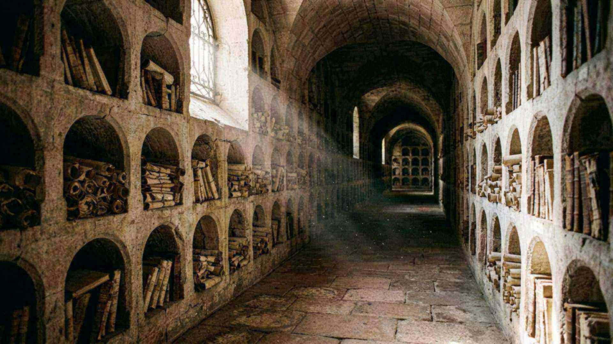

Vérifiez par vous-même
20 questions, 20 sources
Chaque réponse renvoie à une donnée publiée dans le site, avec sa référence. Aucun compte, aucune donnée envoyée.
« Examinez toutes choses ; retenez ce qui est bon. »1 Thessaloniciens 5:21
Score
0 / 20
1. Quel âge l’univers a-t-il selon les mesures du satellite Planck ?
Source : Planck 2018 (S01)
2. Quelle proportion de l’atmosphère la discrète couche d’ozone filtre-t-elle ?
Source : Donnée atmosphérique standard
3. À quelle température l’eau atteint-elle sa densité maximale ?
Source : Propriété physique de l’eau
4. Combien de tours par seconde l’ATP synthase peut-elle atteindre ?
Source : Ueno et al., PNAS 2005 (S11)
5. Combien de paires de bases compte le génome humain ?
Source : Séquençage du génome humain
6. Combien de neurones le cerveau humain compte-t-il ?
Source : Azevedo et al. 2009 (S12)
7. Quelle est la taille d’un fragment de cortex humain reconstruit en 2024 ?
Source : Science 2024 (S13)
8. En quelle année la ville de Tyr est-elle tombée devant Alexandre ?
Source : Arrien, Anabase II.18-24 (PR17)
9. Que dit la chronique de Nabonide sur la prise de Babylone ?
Source : BM 35382 (PR02)
10. Combien de temps les soixante-dix semaines de Daniel représentent-elles ?
Source : Daniel 9:24 ; lecture retenue
11. Quel signal Jésus a-t-il donné pour fuir Jérusalem ?
Source : Luc 21:20, 21
12. Quel poids de données la reconstruction d’un millimètre cube de cortex représente-t-elle ?
Source : Science 2024 (S13)
13. Quel rendement quantique a été mesuré chez la luciole ?
Source : Ando et al. 2008 (S23)
14. Combien de types de photorécepteurs possède la squille ?
Source : Thoen et al. 2014 (S21)
15. Quelle distance la barge rousse peut-elle parcourir sans escale ?
Source : Gill et al. 2009 (S19)
16. Sur quel objet le nom de Ponce Pilate a-t-il été retrouvé ?
Source : Israel Museum (PR11)
17. Quel est le plus ancien manuscrit complet d’Isaïe connu ?
Source : Israel Museum (PR09)
18. Combien d’années séparent l’annonce de la chute de Babylone de son accomplissement selon la datation retenue ?
Source : Isaïe 44:28 ; datation retenue
19. Quel est le rapport approximatif entre la force électrique et la force gravitationnelle de deux protons ?
Source : Constantes fondamentales
20. Que dit le site sur la date des événements à venir ?
Source : Matthieu 24:36
Aucune réponse n’est enregistrée ni transmise : tout se passe dans votre navigateur.
Écouter pourquoi un quiz Vérifier les réponses dans les sources